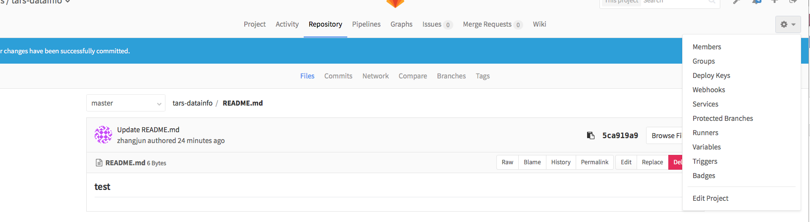
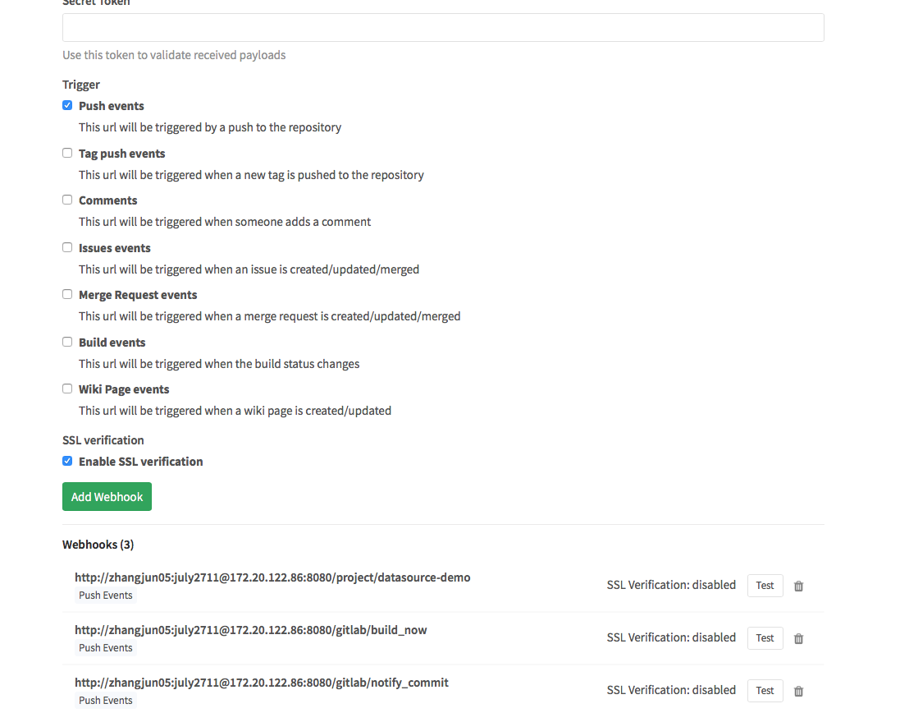
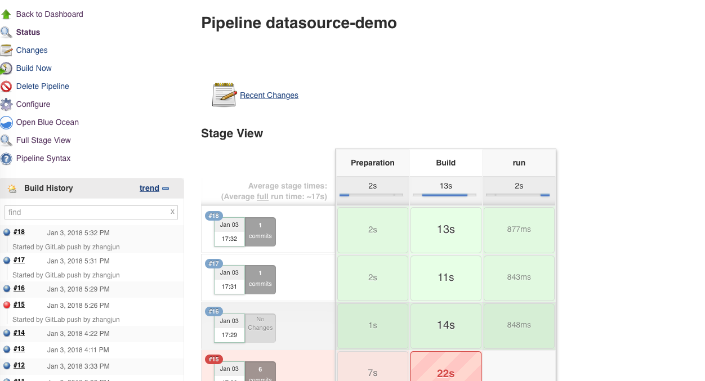
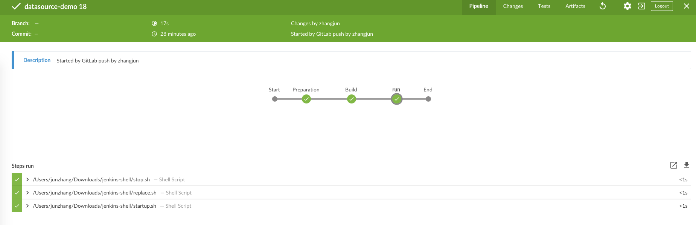

CI 说明
请参见jenkins官网
jenkins安装
两种方式
- docker方式-建议安装blue ocean版本
- war包方式，单点部署。启动命令：java -jar -DhttpPort=8080 -Dhudson.util.ProcessTree.disable=true jenkins.war
docker启动命令
可以参见官网的启动方式

这里需要指定好jenkins的目录，和本地目录的映射关系。如我本地就是

安装完成后，和本地使用没有什么区别了。
ci配置
jenkins配置：
- step1: jenkins主页面->new item
- step2: 填写项目名字,选择pipeline
- step3: 进入主页面，安装几个插件：gitlab plugin 还有一个是gitlab hook plugin。
- step4: 在刚才的item的配置页面，进入build triggers
- step5: 选择“uild when a change is pushed to GitLab. GitLab CI Service URL: http://localhost:8080/project/datasource-demo”
- 在pipline中选择script,具体的变量自己按照机器定义
node {
def mvnHome
stage('Preparation') { // for display purposes
// Get some code from a GitHub repository
git 'http://gitlab.paifenlecorp.com/tars/tars-datainfo.git'
// Get the Maven tool.
// ** NOTE: This 'M3' Maven tool must be configured
// ** in the global configuration.
mvnHome = '/usr/local/maven/apache-maven-3.3.9'
}
stage('Build') {
// Run the maven build
if (isUnix()) {
sh "'${mvnHome}/bin/mvn' -Dmaven.test.failure.ignore clean package"
} else {
bat(/"${mvnHome}\bin\mvn" -Dmaven.test.failure.ignore clean package/)
}
}
stage('run') {
sh "/Users/junzhang/Downloads/jenkins-shell/stop.sh"
sh "/Users/junzhang/Downloads/jenkins-shell/replace.sh"
sh "/Users/junzhang/Downloads/jenkins-shell/startup.sh"
}
}
- stop脚本
# 将应用停止
#stop.sh
#!/bin/bash
echo "Stopping SpringBoot Application"
pid=`ps -ef | grep demo.jar | grep -v grep | awk '{print $2}'`
if [ -n "$pid" ]
then
kill -9 $pid
fi
- replace脚本
#replace.sh 用于将上次构建的结果备份，然后将新的构建结果移动到合适的位置
#!/bin/bash
# 先判断文件是否存在，如果存在，则备份
cd /Users/junzhang/.jenkins/workspace/datasource-demo/
#mvn clean install -Dmaven.test.skip
file="/usr/local/SBA/model.jar"
if [ -f "$file" ]
then
mv /Users/junzhang/.jenkins/workspace/datasource-demo/target/tars-datainfo-1.0-SNAPSHOT.jar /Users/junzhang/Downloads/jenkins-shell/demo.jar.`date +%Y%m%d%H%M%S`
fi
mv /Users/junzhang/.jenkins/workspace/datasource-demo/target/tars-datainfo-1.0-SNAPSHOT.jar /Users/junzhang/Downloads/jenkins-shell/demo.jar
- startup脚本
# startup.sh 启动项目
#!/bin/sh
echo "授予当前用户权限"
chmod 777 /Users/junzhang/Downloads/jenkins-shell/demo.jar
echo "执行....."
BUILD_ID=dontKillMe nohup java -jar /Users/junzhang/Downloads/jenkins-shell/demo.jar > server.log 2>&1 &
gitlab配置
- 进入项目的配置页面，选择webhooks 
- 新建一个webhook 
最终效果
在gitlab上提交一个代码这个时候会自动触发 
在blue ocean上也能看到编译的步骤： 